ภาพ UI คอนเซปต์แยกเต็มหน้า 13 ภาพ • 17 ตุลาคม 2026
เปิดคู่มือ prompt แบบละเอียด
ภาพข้อเสนอด้านรูปลักษณ์และการจัดวาง สร้างด้วย imagegen ยังไม่ใช่หน้าเกมที่ใช้งานได้ ข้อความ ตัวละคร ชื่อผู้เล่น เหรียญ และสัญลักษณ์บางจุดคลาดเคลื่อนระหว่างภาพ ต้องยึดโค้ดจริงและแก้รายละเอียดก่อนพัฒนา เช่น MINT เหลืออิทธิพล 1 ใบ ไม่ใช่ 2 ใบ, เวลา 04:35 คือเวลาเล่นสะสม ไม่ใช่เวลาที่เหลือ, ไพ่คู่แข่งที่ยังมีผลต้องซ่อน, ไอคอนมีบทบาทจริงไม่ได้หมายความว่าต้องเปิดเผยไพ่ และสถานะพร้อมในห้องรอไม่ได้อยู่ในระบบปัจจุบัน ภาพบทเรียนเป็นตัวอย่างบทที่ 2; ภาพกติกาเป็นภาพรวม และมือถือเป็นตัวอย่างหน้าตอบโต้
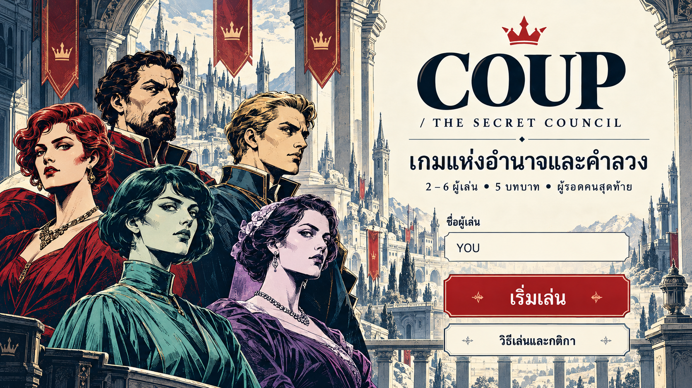
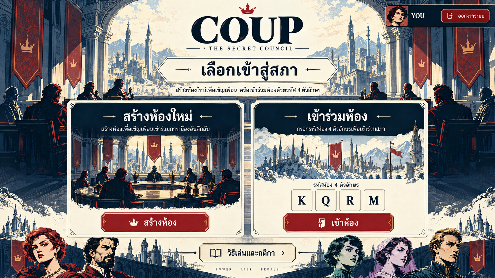
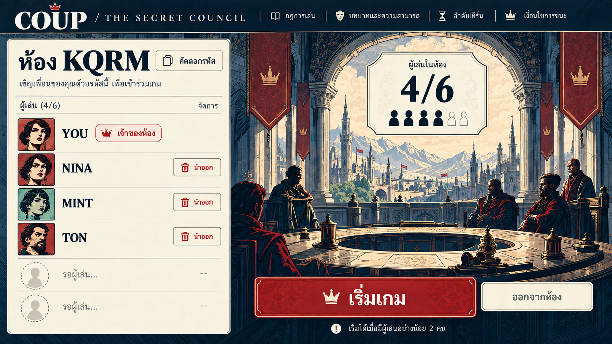
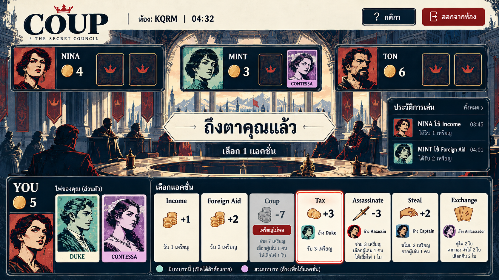
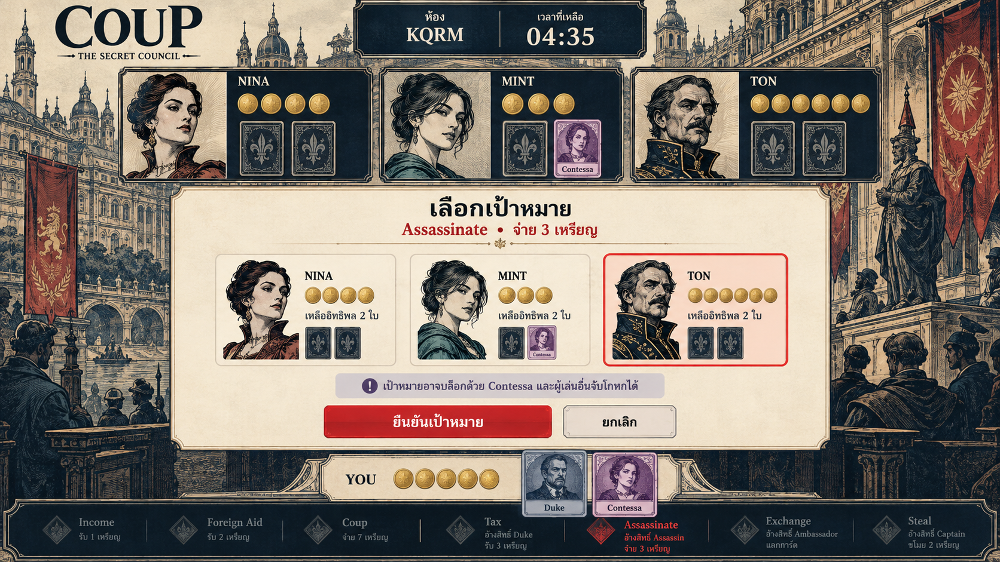
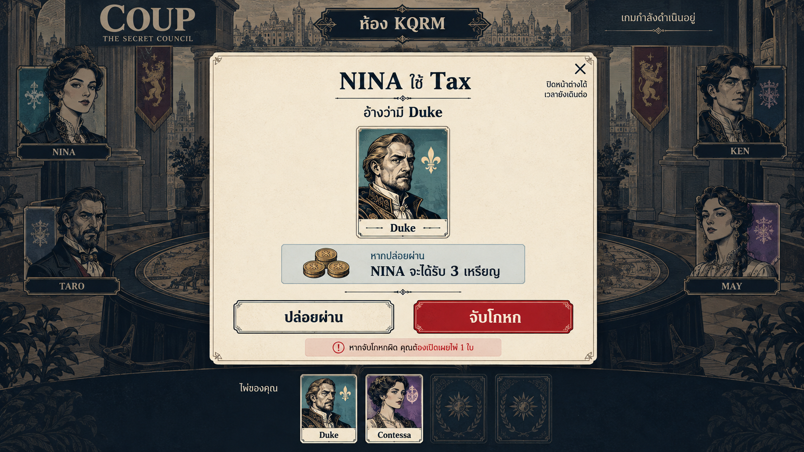
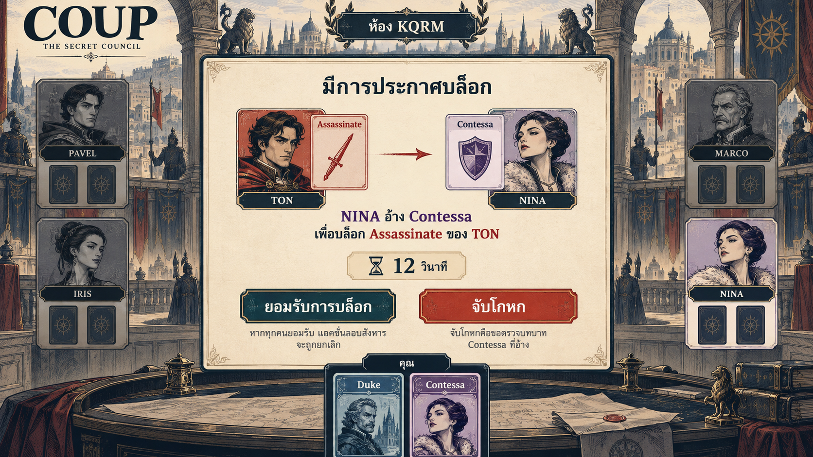
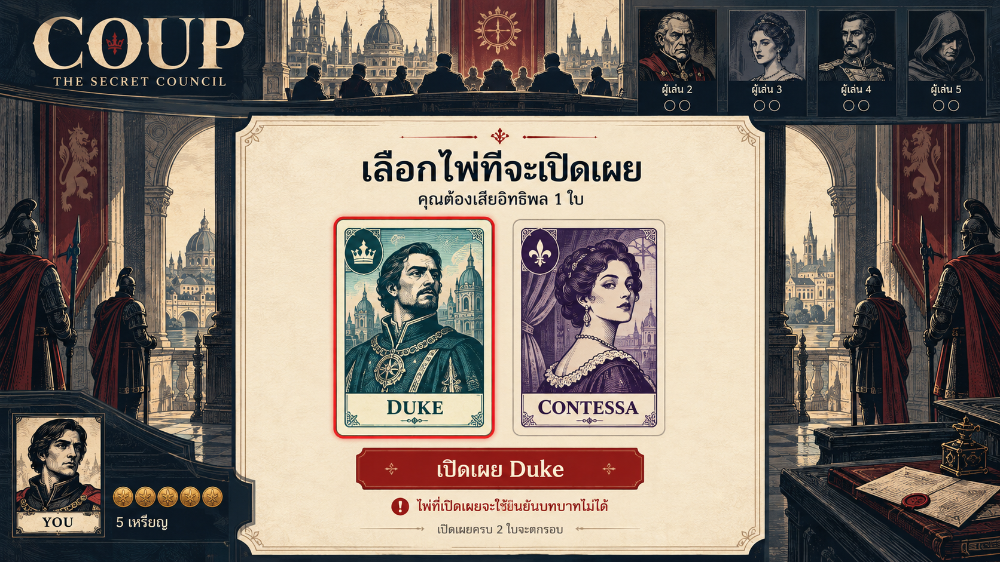
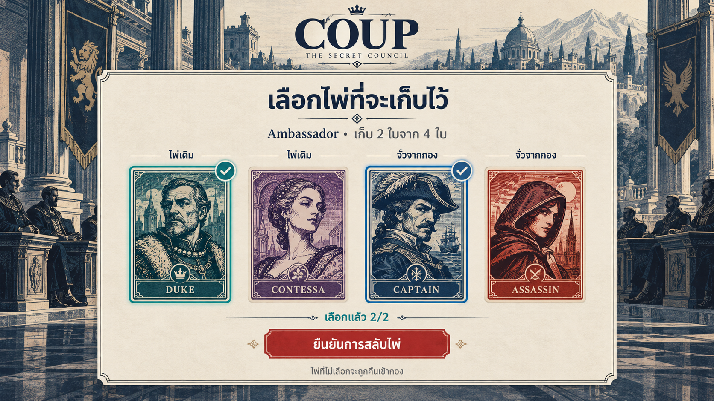
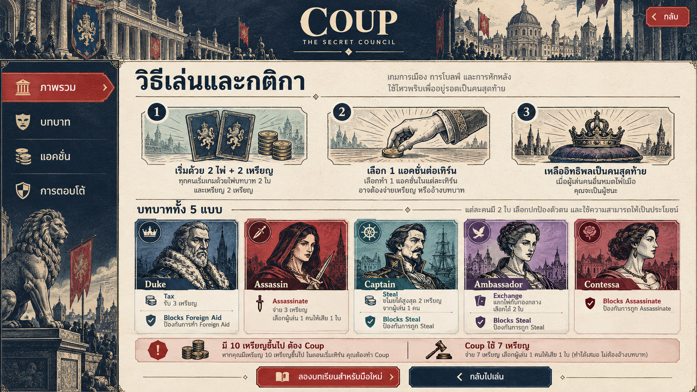
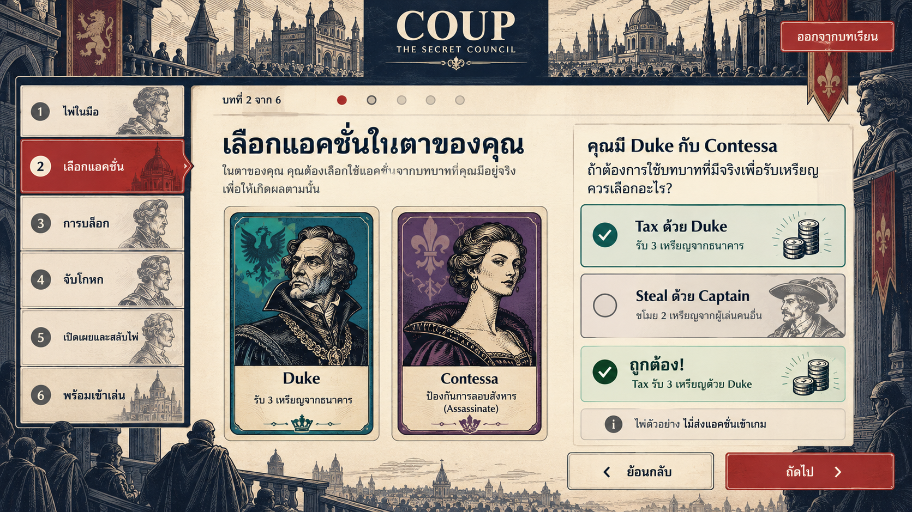
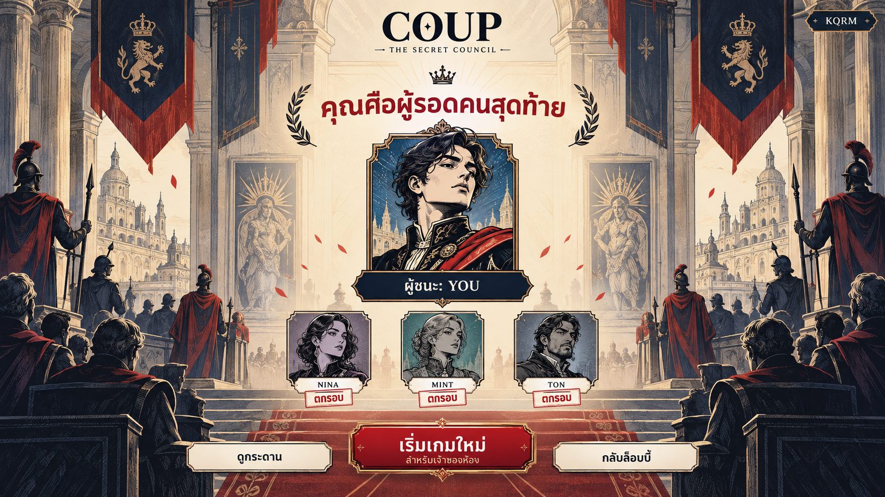
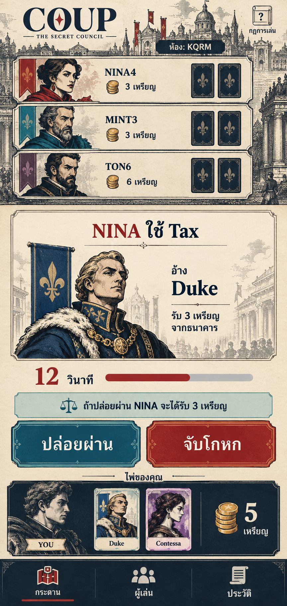